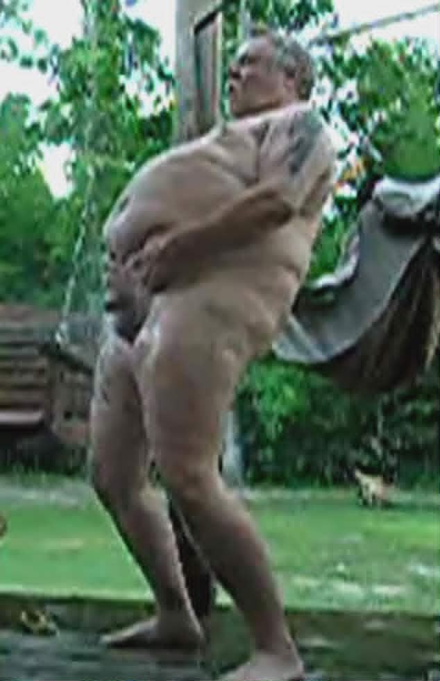

Sklep

Dane podstawowe
Jeden z trzech przedstawicieli z Otyłej Trójki Ohueli. Nie jest konkretną osobą, ale jednocześnie nią jest niczym określenie Pursy w przypadku Gerharda. Najpopularniejszy filmik z udziałem Sklepa przedstawia go masturbującego się podczas gdy strumień wody z węża ogrodowego nakierowany jest na jego genitalia. Owy strumień nakierowuje również na swój odbyt. Odbywa się to w jego ogródku po którym chodzą dwa psy, najprawdopodobniej jego.
Wygląd
Najbardziej znany wygląd Sklepa przedstawia go jako starszego otyłego mężczyznę z wielkim brzuchem lecz małymi piersiami, noszącego okulary i łysego.
Przykładowe filmiki w których brał udział
"Sklep jest tańczącym wężem ogrodowym"
"Cały sklep trzęsie się od jedzenia pizzy"
"Zmysłowość, seksapil, taniec brzucha i flirt"*
* W przypadku tego filmiku nie wiadome jest czy rzeczywiście występuje tam osoba pokroju Sklep, gdyż nie jest to wprost wyrażone w tytule, lecz aparycja owego mężczyzny wskazuje na to że można go zaliczyć do kategorii Sklep.